Café oscuro
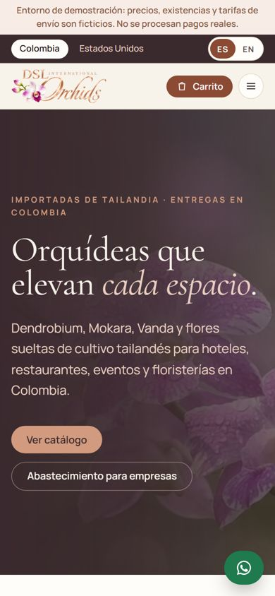
Página web · 26 de octubre
Bajamos el café oscuro, como pidieron, y probamos tres combinaciones claras tomadas del logo: el beige y el oro rosa de las letras, el rosa pastel del final del dorado y el lila de la flor. La página es la misma en todas; solo cambian los colores. A la izquierda está la actual, para comparar.
Las opciones
Pueden pedir mezclas, por ejemplo el fondo de una con los botones de otra. Ajustamos hasta que les guste.

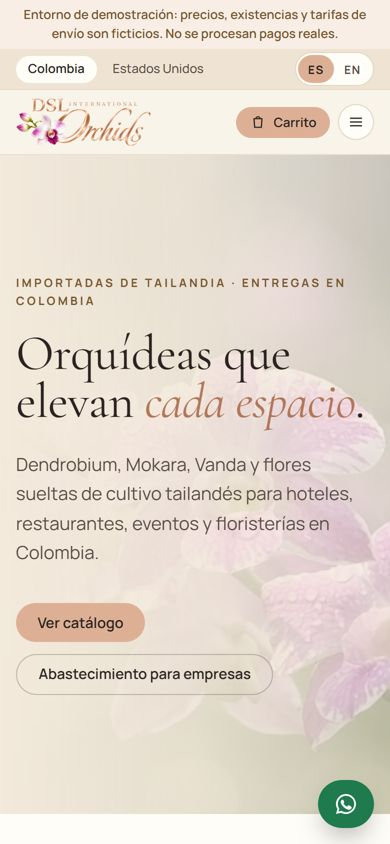
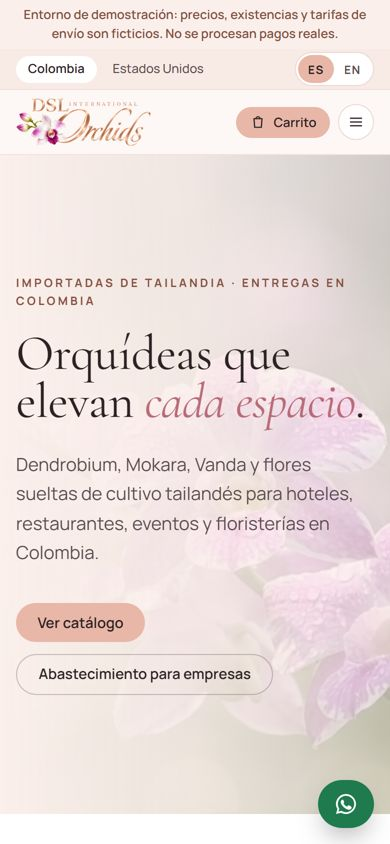
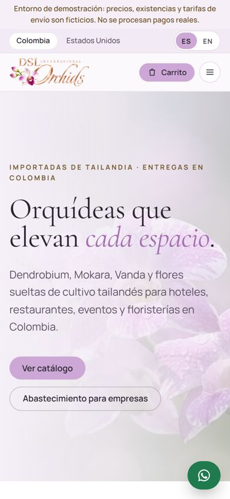
En computador
Toquen una imagen para verla grande y recorrerla de arriba abajo: portada, variedades, productos, la franja para empresas y el pie de página.
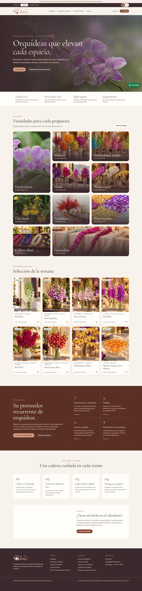
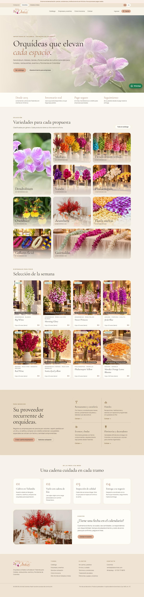
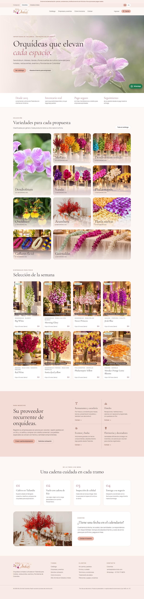
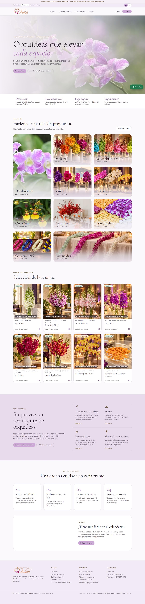
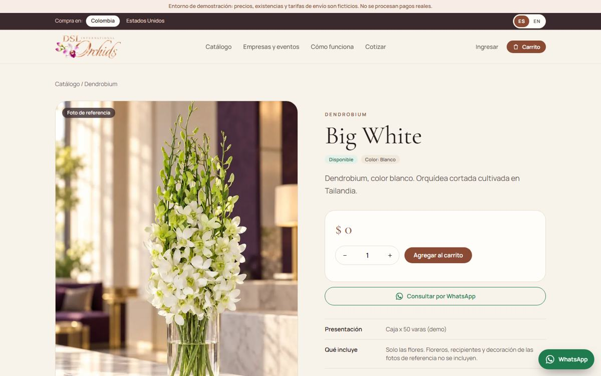
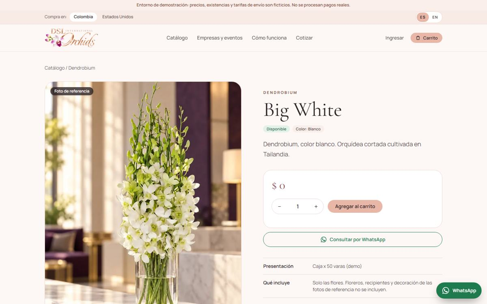
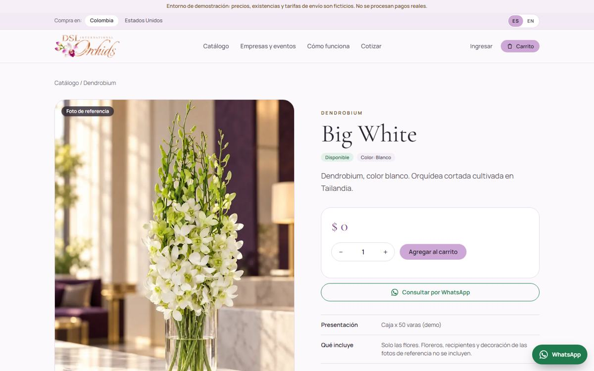
También nuevo
Lo que sigue
Cuando elijan el color, el mismo diseño se pasa a dslorchids.com para que las dos páginas se vean como una sola marca.